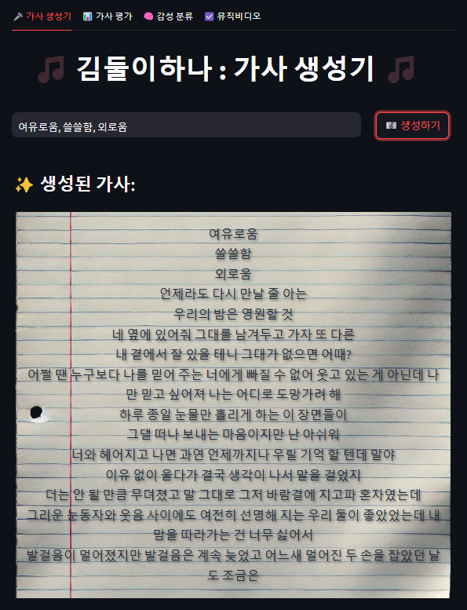
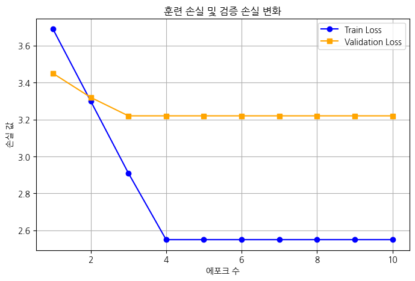
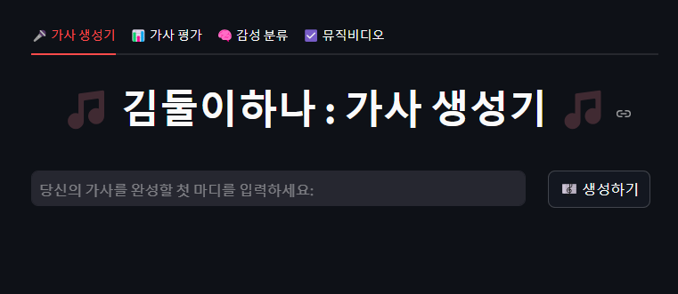
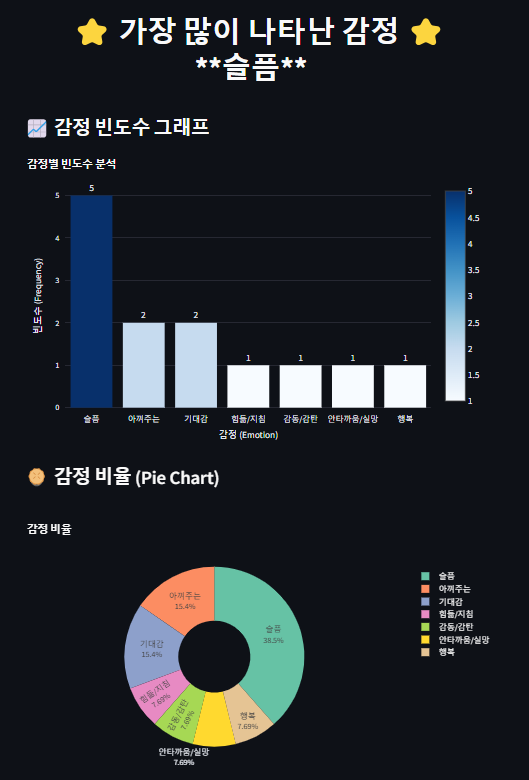
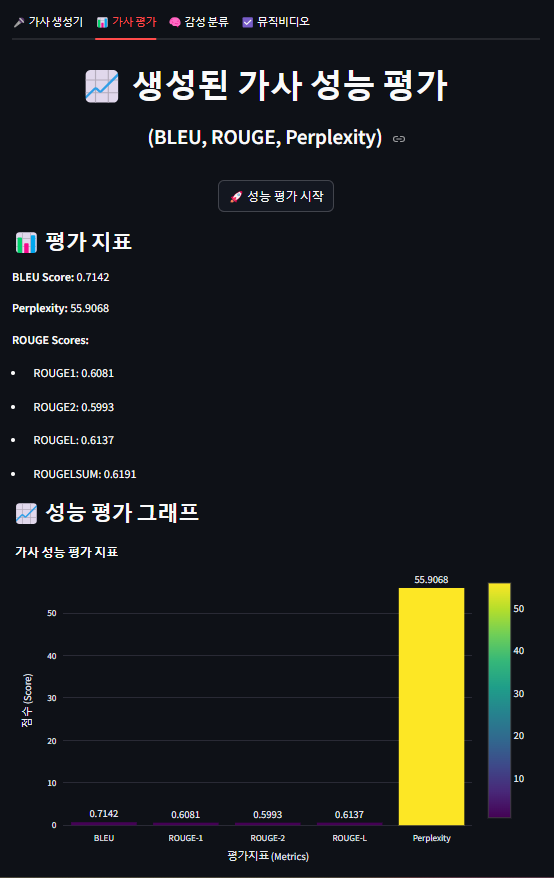

BE MY MUSE - KoGPT-2 기반 감성 작사 AI
Problem
공모전 배경
MUSE Label의 "BE MY MUSE" 공모전은 작곡된 음악을 듣고, 해당 음악에 어울리는 가사를 작성하여 제출하는 대회였습니다. 제공된 음악은 감수성 높은 발라드였고, 우리 팀은 "직접 작사하지 말고, AI에게 맡겨보자"라는 아이디어로 프로젝트를 시작했습니다.
Technical Challenge
한국어에 강한 KoGPT-2를 선택했지만, 이 모델은 뉴스, 소설, 보고서 등 문어체 텍스트로 학습되어 있었습니다. 감수성 높은 발라드 가사를 생성하기에는 부적합했고, 모델이 감성적인 가사를 생성할 수 있도록 Fine-Tuning이 필요했습니다.
Solution
Core Concept
문어체로 학습된 KoGPT-2를 감수성 높은 가사 데이터로 Fine-Tuning하여, 3개의 키워드만 입력하면 발라드에 어울리는 감성적인 가사를 자동 생성하는 모델을 개발했습니다.
Key Features
- 멜론 차트 기반 7,439곡 한국어 가사 데이터셋 구축
- KoGPT-2 Fine-Tuning을 통한 감성 가사 생성 모델 개발
- BLEU, ROUGE, Perplexity 기반 생성 품질 평가
- 43개 감정 카테고리 기반 감성 분석 (KOTE 모델)
주요 성과
- 학습 데이터셋 — 7,439곡 수집 → 4,840곡 정제 데이터셋 구축
- Fine-Tuning — KoGPT-2 (125M) 모델 단독 Full Fine-Tuning 수행
- 감성 분류 검증 — KOTE 모델 43개 감정 카테고리 기반 품질 검증
- 다중 평가 지표 — BLEU + ROUGE + Perplexity 정량 평가 체계 구축
- 공모전 참가 — MUSE Label "BE MY MUSE" 공모전 AI 작사 출품
What I Built
1. 데이터 수집
전체 수집 된 7,439곡 중 힙합 장르 데이터 수집을 담당했습니다.
Selenium을 활용한 멜론 차트 동적 크롤링으로 가사 데이터를 확보했습니다.
2. 모델 Fine-Tuning
- RTX 4090 GPU 2장을 활용한 학습 환경 구축
- KoGPT-2 (skt/kogpt2-base-v2) 모델 Fine-Tuning 전 과정 단독 수행
- temperature, top_k, top_p 등 생성 파라미터 최적화
- 학습률, 배치 사이즈, 에폭 수 등 하이퍼파라미터 튜닝
- 과적합 방지를 위한 최적 학습 횟수를 결과를 통해 도출
3. 모델 평가
- 3개 키워드 입력 → 가사 생성 결과물 평가
- BLEU Score: 생성된 텍스트의 n-gram 정확도 측정
- ROUGE Score: 참조 텍스트와의 중복 정도 평가
- Perplexity: 언어 모델의 확신도 및 자연스러움 측정
Data Pipeline
- 데이터 수집: Selenium을 활용한 멜론 차트 동적 크롤링 (7,439곡)
- 전처리: 중복 제거, 정규화, 토큰화 → 4,840곡 학습 데이터셋 확보
- 토크나이저: KoGPT2 토크나이저 활용, 특수 토큰 추가
- 학습 형식: [BOS] 키워드: {keyword} 가사: {lyrics} [EOS]
Model Architecture

Fine-tuning 설정
- Base Model: SKT KoGPT2-base-v2 (125M parameters)
- GPU: RTX-4090 (24GB VRAM)
- Hyperparameters: lr=5e-5, batch_size=8, epochs=10
- Optimizer: AdamW with weight decay
생성 파라미터 최적화
- temperature: 0.8 (창의성과 일관성 균형)
- top_k: 50, top_p: 0.95 (다양성 확보)
- repetition_penalty: 1.2 (반복 방지)
Service Demo
1. 서비스 시작 화면

2. AI가 생성한 가사 결과
3. 감성 분석 시각화

4. 성능 평가 결과

Metrics & Evaluation
정량적 평가 지표
일반적인 NLP 태스크 기준
• BLEU: 0~1 범위, 0.3 이상이면 양호 (번역 태스크 기준)
• ROUGE: 0~1 범위, 높을수록 참조 텍스트와 유사 (요약 태스크 기준)
• Perplexity: GPT-2 벤치마크 기준 약 16~20, 낮을수록 자연스러운 문장
BeMyMuse Model Task 해석
공모전 주제가 직접 작사한 가사, 즉 창의성이 중요한 과제였으므로, BLEU/ROUGE가 너무 높으면 오히려 기존 가사와 유사하여 표절 논란이 있을 수 있다고 생각했습니다.
따라서 적절히 낮은 BLEU/ROUGE + 낮은 Perplexity가 "창의적이면서 자연스러운 가사"의 지표가 됩니다.
감성 분류 검증
KOTE (Korean Online That Evaluation) 모델을 활용하여 생성된 가사를 43개 감정 카테고리로 분류했습니다.
발라드 가사에 적합한 감정(슬픔, 그리움, 사랑, 외로움 등)이 높은 비율로 검출되는지 확인하여, Fine-Tuning된 모델이 목표로 한 감성적 가사를 생성하는지 검증했습니다.
성과 및 회고
주요 성과
- 4,840곡의 정제된 노래 가사 데이터셋 구축
- KoGPT-2 Fine-tuning으로 자연스러운 가사 생성 모델 개발
- FastAPI + Streamlit UI 완성도 높은 서비스 구현
- 감성 분석과 문맥 구조 시각화로 AI 창작 지원 도구의 가능성 입증
시행착오
처음에는 KoNLPy와 국립국어원 말뭉치를 기반으로 랜덤 조합 방식의 가사 생성을 시도했습니다. 하지만 한글은 조사, 어미 변화 등 문법 구조가 복잡하여 단순 조합으로는 자연스러운 문장을 만들 수 없다는 것을 깨달았습니다.
사실 이때 정말 많이 고생했습니다. 딥러닝에 대한 이해도와, 엔지니어링 지식이 부족하기도 했지만, 한국어가 갖고 있는 고유한 특성들을 파악하지 못했기 때문입니다. 이는 제가 한국에서 태어나, 자연스럽게 한국어를 사용하다보니 느끼지 못했던 문제였습니다.
하지만 생성형 AI에 대한 공부를 꾸준히 하면서, 한국어의 복잡한 문법 구조도 대규모 언어 모델이 충분히 학습할 수 있다는 확신이 들었고, KoGPT-2 모델을 선택하여 Fine-Tuning을 계속 진행하게 되었습니다. 아직 Perplexity 수치가 다소 높아 개선의 여지는 있지만, 모델이 점차 한국어 문법과 감성적 표현을 학습해가는 모습을 보면서 큰 보람을 느꼈고 더 높은 목표를 갖게 된 것 같습니다.
기술적 성장
이 프로젝트를 통해 Pre-Training과 Post-Training(Fine-Tuning)의 차이, SFT(Supervised Fine-Tuning)의 개념을 이해하게 되었습니다.무엇보다 LLM은 "지능"이 아니라 "확률 예측 기반의 토큰 생성기"라는 본질을 알게 된 것이 가장 큰 수확이었습니다.
이 이해를 바탕으로 모델의 한계와 가능성을 객관적으로 판단할 수 있게 되었습니다.
그리고 한글이라는 언어는 Token의 효율화가 아직 덜 되어 있어, 영어 기반 모델보다 더 많은 데이터와 학습이 필요하다는 점도 깨달았습니다. 이는 저에게 앞으로도 한국어 NLP 모델을 개발하기 위한 중요한 목적의식이 되었다고 생각합니다.